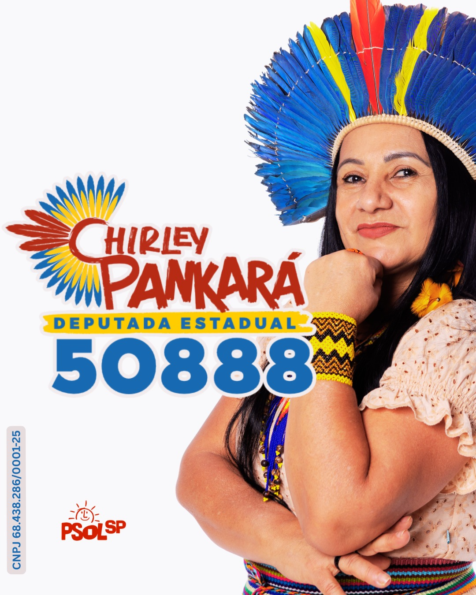

Chirley
Pankará
Mulher indígena nordestina, pedagoga e ativista dos direitos humanos. Primeira co-deputada indígena do Estado de São Paulo, lutando por educação, saúde e direitos dos povos indígenas.

Ancestralidade, educação e luta em cada trajetória
Chirley Pankará é mulher indígena nordestina e ativista dos direitos humanos, vive em São Paulo há 28 anos. Mãe de duas filhas, iniciou sua trajetória profissional na capital paulista como empregada doméstica.
Desde 2007 atua em diversas áreas: meio ambiente, cultura, educação, saúde, direitos das mulheres e defesa dos povos indígenas, tanto das aldeias quanto em contexto urbano, reunindo experiências e participações em eventos, projetos e articulações de âmbito nacional e internacional.
Em 2018, tornou-se a primeira co-deputada indígena do Estado de São Paulo. Durante o mandato, destinou emendas parlamentares aos povos indígenas e propôs a criação do Agosto Indígena e a instituição do Dia Estadual da Mulher Indígena, hoje no calendário oficial do Estado de São Paulo.
"Ancestralidade é sustentabilidade; a inovação está em nossas mãos."
Uma trajetória de luta, ancestralidade e representatividade
Do trabalho como empregada doméstica à primeira cadeira indígena na história da Assembleia Legislativa de São Paulo — uma caminhada construída com educação, articulação e coragem.
Origem e chegada a São Paulo
Mulher indígena nordestina, vive em São Paulo há 28 anos. Iniciou sua trajetória profissional na capital paulista como empregada doméstica.
Atuação social desde 2007
Meio ambiente, cultura, educação, saúde, direitos das mulheres e defesa dos povos indígenas — das aldeias ao contexto urbano. Integrou a Agenda 21 no consórcio das sete cidades do Grande ABC, pelo despertar da consciência ambiental.
Primeira co-deputada indígena de SP
Em 2018, tornou-se a primeira co-deputada indígena do Estado de São Paulo, com emendas parlamentares, requerimentos de informação e audiências públicas em defesa dos povos indígenas.
Datas conquistadas
Criou o Agosto Indígena e instituiu o Dia Estadual da Mulher Indígena, celebrado em 5 de setembro — ambos incorporados ao calendário oficial do Estado de São Paulo.
Saúde indígena na pandemia
Atuou pela implantação de UBSs de referência em saúde indígena na região do Grande ABC durante o período pandêmico.
Formação acadêmica
Pedagoga pela FAMA, mestre em Educação pela PUC-SP, doutora em Antropologia Social pela USP e formação em Teatro em 2008.
Prêmios e reconhecimento
Prêmio MCEYS, Prêmio Paulo Freire de Qualidade de Ensino e homenagem da então vereadora Erika Hilton no Dia Internacional da Mulher.
Gestão dos CECIs Guarani
Gestão educacional dos Centros de Educação e Cultura Indígena (CECIs) do povo Guarani da Zona Sul e do Pico do Jaraguá, de 2010 a 2018.
Ministério dos Povos Indígenas
Coordenadora-Geral de Promoção às Políticas Culturais do MPI, propondo o programa Ancestralidade Viva, de fortalecimento à cultura dos povos indígenas.

Uma nova candidatura, a mesma luta
Depois de se tornar a primeira co-deputada indígena do Estado de São Paulo e somar 27.802 votos em 2022, Chirley Pankará é candidata a Deputada Estadual por São Paulo pelo PSOL, retomando a luta por educação, saúde, cultura e direitos dos povos indígenas.
Estadual
Vamos juntos legislar por uma sociedade plural, com garantia de direitos
A inovação está em nossas mãos. Acompanhe a campanha, as agendas e as propostas de Chirley Pankará — número 50888.